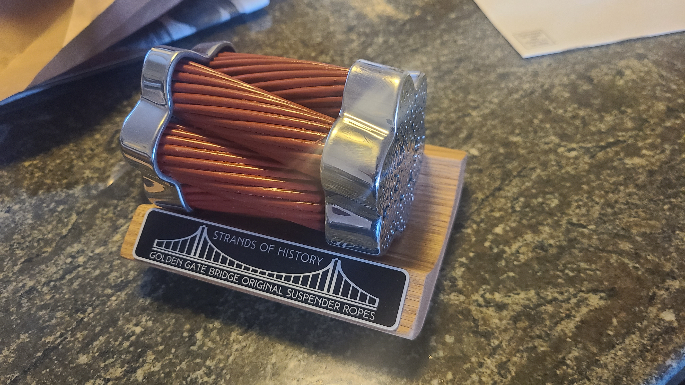
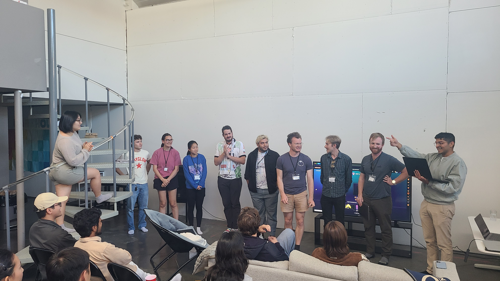

🌍
SF GeoGuessr
September 2025
Inspired by the GeoGuessr World Cup, a few friends and I hosted our very own version featuring only SF locations. The winning prize was a piece of the Golden Gate Bridge.




September 2025
Inspired by the GeoGuessr World Cup, a few friends and I hosted our very own version featuring only SF locations. The winning prize was a piece of the Golden Gate Bridge.